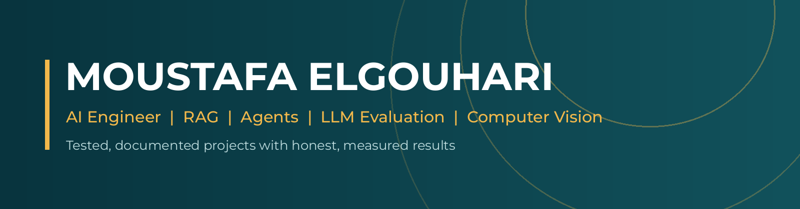

AI Engineering graduate (B.Sc. 2026). I build small, complete AI systems and test them honestly: retrieval-augmented generation, multi-agent workflows, LLM evaluation, computer vision and Arabic NLP. Every project below has tests, CI and a README that states what it does and what it does not. Numbers are measured on held-out data, small samples are labelled as small, and rule-based parts are labelled as rules.
My graduation project, FireGuard, was graded Excellent with Honors (team of 8, my role: backend deployment).
Click a logo to open the repo.
Bilingual RAG Arabic/English answers with citations | Agentic Job Assistant LangGraph agents, critique loop, human approval | LLM Eval Kit F1, groundedness, hallucination flags, LLM judge | NL2SQL Agent Read-only safety gate, golden benchmark |
Ops Autopilot Planner, researcher, writer, critic, DOCX | Retention Copilot Churn dashboard, Arabic assistant, agents | Arabic RAG Chatbot e5 + FAISS retrieval, AraELECTRA reader | Arabic NLP Toolkit Preprocessing, language and dialect ID |
Churn Insight Platform FastAPI, Docker, CI, SQL migrations | Telco Churn Lab Eight-model benchmark, test set used once | SAT Vision Service ResNet18 on EuroSAT, FastAPI + web UI | Doc Scan Pro OpenCV: phone photo to print-ready scan |
FireGuard Graduation project: fire and smoke detection, alerts | FireGuard Docs System documentation for FireGuard |
Heart Disease ML Prediction pipeline | Monkeypox Detection Detection pipeline | Diabetes Prediction Classical ML | COVID-19 EDA Exploratory analysis |
Warsaw EV Charging 114k sessions, 67 stations | Transformer MLM Masked language model | GANs Implementations | Ra7al Tourism website |
Hospital Mgmt System Python app |
| Project | Result | Note |
|---|---|---|
| churn-insight-platform | 96.3% accuracy, ROC-AUC 0.992 | Held-out data, public Iranian telecom dataset |
| sat-vision-service | 94.1% accuracy | EuroSAT, 10 classes, held-out |
| arabic-rag-chatbot | hit@5 97.3%, exact match 33.3%, F1 46.9% | XQuAD-Arabic, reported as measured |
| telco-churn-lab | 79.9% accuracy, ROC-AUC 0.836 | 5-fold CV, test set used once |
| nl2sql-agent | rules 15/15, LLM only 6/15 | Golden-SQL benchmark; the LLM-only score is the honest gap |
| retention-copilot | 3/3 LLM drafts passed the Critic | Gemini 3.1 Flash-Lite, tiny run, not a benchmark |
| llm-eval-kit | LLM judge mean 0.50 vs heuristic 0.435 | Small labelled set; hallucination rate 0.4 vs 0.2 |
| bilingual-rag | hit@3 1.0 | Only 4 questions, a smoke test, not a benchmark |
Built with AI pair-programming help, tested and measured by me.